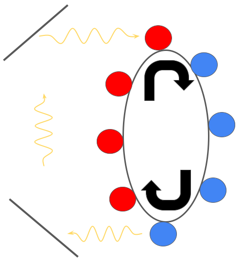

May 6, 2023
In 1881 John Gamgee filed a patent for the Zeromotor, which was an engine that he claimed could run in perpetuity without fuel. Intended for use on a ship or a train, the Zeromotor would use the heat from the surroundings to boil a mass of ammonia. This ammonia gas would then push a piston through a cylinder, causing it to condense back into a liquid. Gamgee claimed that the process could repeat indefinitely and continually drive the piston. This appeared to be an engine that didn't consume any fuel. Miraculous! Gamgee was so convincing (or maybe his audiences were so gullible) that the chief engineer of the US Navy and US President James A. Garfield endorsed his plan.
With approval from the US Navy and the President, Gamgee must have instantly began mass producing his engine, right? There was only one problem with the Zeromotor: it didn't work. In fact, it was impossible for it to work. Devices like the Zeromotor are called perpetual motion machines[1]. These are machines that claim to perform useful work without any energy or fuel input. Most of these devices violate the second law of thermodynamics[2], which says you can't get something for nothing. This law is among the most sacred in physics, so its violation is an instant damnation of a design. While all perpetual motion machines are faulty, their flaws are sometimes subtle and difficult to notice, as evidenced by Gamgee's initial success. Even better, perpetual motion machines can occasionally reveal some deeper physics that is not obvious, as is the case with Hermann Bondi's thought experiment.
In this thought experiment, there is a circular track that atoms are stuck to as shown in the diagram to the right. The blue atoms are in their excited, higher energy state, and the red atoms are in their lower energy state. The track moves clockwise and each time one of the excited atoms is close to the mirror on the bottom left, it emits a photon and is demoted to its ground state. This photon is reflected off the two mirrors and hits one of the ground state atoms at the top of the wheel. Since mass is equivalent to energy, the excited atoms are heavier than the ground state atoms. This pulls the right side of the wheel down and allows it to turn, propelled by gravity.
Immediately, there seem to be a few fantastical assumptions in this experiment. The most obvious is the fact that the photons must be emitted in precisely the correct direction and at precisely the right time. Furthermore, there must be some way to trap atoms in place on the belt and prevent them from sliding. While these are valid concerns, this is not where this particular perpetual motion machine fails. If we assume that the photons are emitted exactly when the atoms are in the correct position, and that the atoms don't move from their position on the track, Bondi's device still doesn't work, but the reason is subtle.
The key is that we have assumed the device is in a gravitational field. That is, objects are pulled from the top of the figure to the bottom. Importantly, Einstein showed in his formulation of general relativity that gravitational fields bend spacetime. This bending of spacetime affects everything, even light. Therefore, as photons move between the mirrors, they are under the influence of the gravitational field. In this case, this means that the photons in question become red shifted[3], or decrease in frequency. This corresponds to a decrease in the energy of the photons, meaning that they won't have enough energy to excite the atoms at the top of the wheel, causing the whole device to cease working. This is a beautiful connection between thermodynamics and gravity which shows how physical concepts that seem to have nothing to do with one another are in fact intimately related.
Probably the most famous purported violation of the second law of thermodynamics is Maxwell's demon. In this thought experiment, there are two boxes containing a gas with a door connecting them. The gas particles bounce around the boxes. Controlling the door is a demon. Whenever a fast moving gas particle is moving from the right side of the box to the left, the demon opens the door and lets it through. He does the same whenever a slow gas particle is moving from the left side to the ride side. After following this procedure for some time, the demon will have the fast particles on the left and the slow ones on the right. In other words, he will have created a temperature gradient across the boxes. In theory, this temperature gradient could be used to drive a motor or do some other useful work, meaning the demon got something for nothing. But this violates the second law of thermodynamics! What's the catch?
While Maxwell's demon has a long history[4], the resolution to this problem lies in a somewhat unexpected place: the demon's mind. When the demon is deciding whether to open or close the door, he must observe the particles in the gas. In particular, he must gain information about the particles and their speeds. This concept, information, is essential to the resolution of the paradox. Léon Brillouin, a French physicist, made this connection between information and entropy in order to resolve the paradox. He reformulated the second law of thermodynamics to take into account the information that the demon gains. In particular, Brillouin claimed erasing information (which the demon must do eventually) generates entropy. This means that the demon generates more entropy through his processing of information in sorting the molecules than the gas loses during its transformation[5].
While it is satisfying to have a resolution to the problem of Maxwell's demon, the connection between physics and information is profoundly important. When Maxwell created his demon in 1867, there was no concept of information theory. It was not until the mid 20th century when Claude Shannon created the field that a resolution involving it could have been conceived. This grounding of information, and thus computation, in the laws of physics has profound consequences for technology and humans. For example, the Margolus-Levitin theorem sets a fundamental limit on the speed of computers[6]. This means that ultimately, the digital world is constrained by the physical. While it may seem obvious, this reminds us that one always has to confront physics, no matter how hard one tries to avoid it.
When I think about physics, the first thing I think about isn't equations. Rather, I imagine I'm in a dark house, with a flashlight in my hand. The flashlight is dim, so I can't quite see the walls of the room I'm in. As I walk around, moving from room to room, I get a glimpse of some features-the shapes of the walls and ceiling, where the furniture is. I don't know how large the house is, or where each of the staircases and hallways leads, but sometimes I get an eerie feeling of familiarity, like I've been in a room before. My mind tells me it's impossible: the room I'm thinking of is on the other side of the house. But it turns out that it's true. The seemingly distant rooms are in fact neighbors. Maybe a previously unseen door connects them, or maybe it's just a air duct, but the connection is there.
These stories and problems are representative of this feeling. Whether it's Gamgee's Zeromotor, Bondi's thought experiment, or Maxwell's demon, I can sense the watchful eye of physics. Physics knows something that we don't: something is amiss, someone is mistaken, the record must be set straight. In the case of Gamgee, his reckoning with physics pushed him into a life of petty crimes and bankruptcy. For the others, their bumps with the edge of physics reveal something deeper about nature. While ultimately we are constrained by the walls mother nature has constructed, we can always do something to explore her house, and maybe find that extra hole in the wall she forgot to repair.